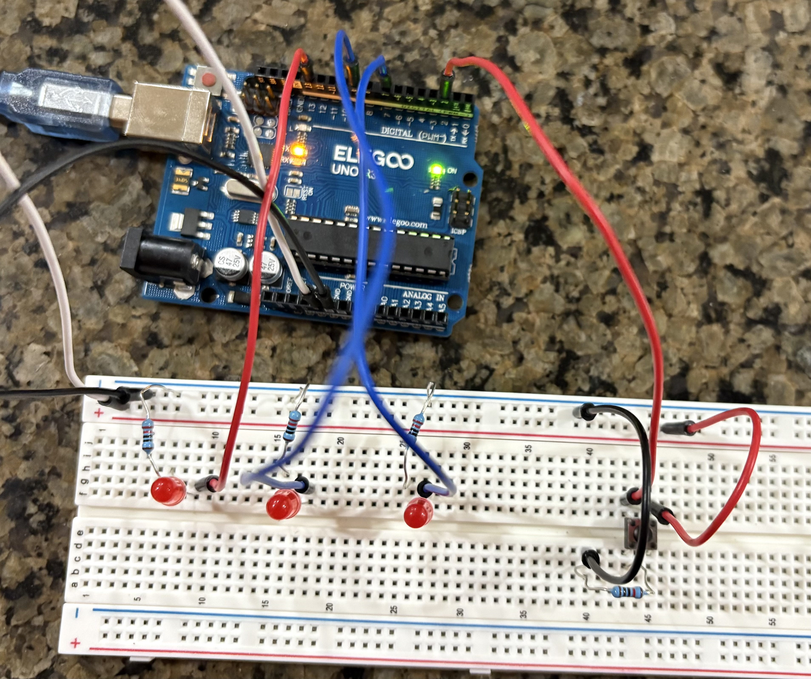
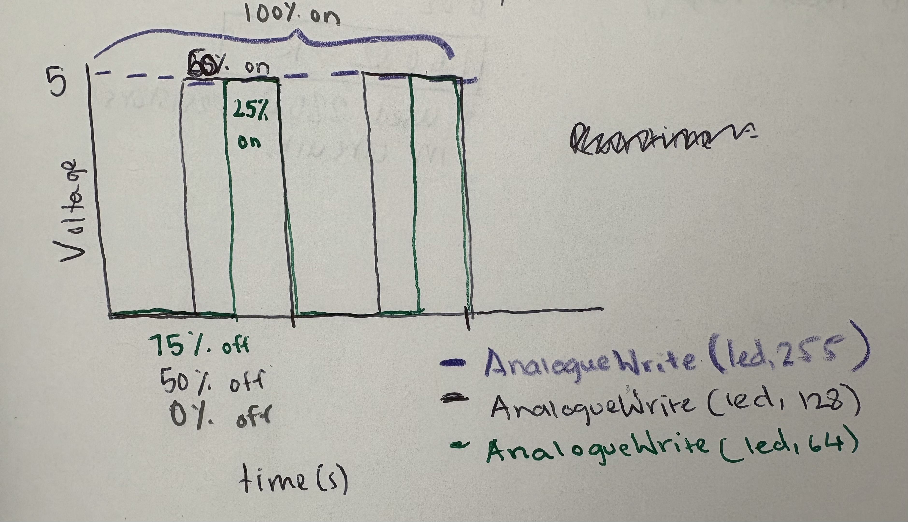
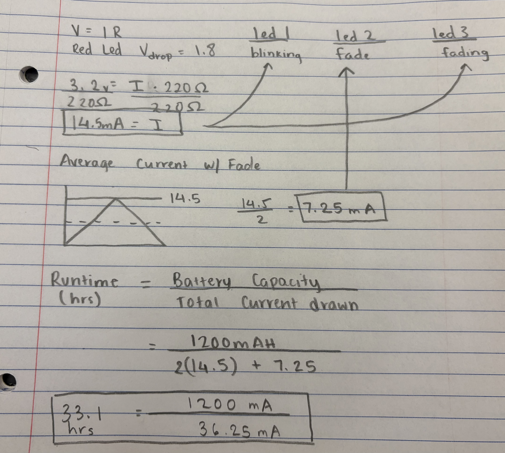

Welcome to my documentation for the Fade assignment!
Circuit Demonstration
A demonstration of the Fade circuit in action.
Circuit Schematic
Caption: The schematic diagram illustrates the wiring and connections for the Fade circuit.
Circuit Diagram

Caption: A labeled diagram of the circuit components used in the Fade project.
Resistor Calculations
Caption: I ended up using a 220 ohm resistor becasue, in my calculation, the minimum resistance needed for this circuit is 160 ohms. I used 220 becasue I did not have a 160 ohm resistor and a higher resistor uses less power and is more energy efficient.
// Variables for button state and fading LED
int button = 2; // Button pin number
bool mode = false; // Mode toggled by button press
int prev = 0; // Previous button state
int buttonVal = 0; // Current button state
// Pin for the 1st LED
int led1 = 13; // Pin number for LED1
// Values for fading LED (LED2)
int led2 = 9; // Pin number for LED2 (PWM pin)
int fadeAmount = 5; // Increment/decrement step for fading
int brightness = 0; // Current brightness of LED2
// Pin for the 3rd LED
int led3 = 7; // Pin number for LED3
void setup() {
pinMode(led1, OUTPUT); // Set pin for LED1 as output
pinMode(led2, OUTPUT); // Set pin for LED2 as output
pinMode(led3, OUTPUT); // Set pin for LED3 as output
pinMode(button, INPUT); // Set pin for button as input
}
void loop() {
buttonVal = digitalRead(button); // Read the current state of the button
// Check if button is pressed and previous state was unpressed
if (buttonVal == 1 && prev == 0) {
mode = !mode; // Toggle the mode variable
// If mode is ON, fade LED2 up
if (mode) {
for (int i = 0; i < = 255; i = i + fadeAmount) {
analogWrite(led2, i); // Set brightness of LED2
delay(5); // Small delay for smooth fading
}
}
// If mode is OFF, fade LED2 down
else {
for (int i = 255; i >= 0; i = i - fadeAmount) {
analogWrite(led2, i); // Set brightness of LED2
delay(5); // Small delay for smooth fading
}
}
}
// If mode is ON, blink LED1 and LED3
if (mode) {
digitalWrite(led1, HIGH); // Turn LED1 on
digitalWrite(led3, HIGH); // Turn LED3 on
delay(50); // Short delay
digitalWrite(led1, LOW); // Turn LED1 off
digitalWrite(led3, LOW); // Turn LED3 off
delay(50); // Short delay
}
prev = buttonVal; // Update the previous button state
}
Caption: Firmware code for the Fade circuit, demonstrating the fading effect by incrementing and decrementing brightness in led2.
Additional Questions
1. Draw a chart where the X axis is time and the Y axis is voltage. Draw 3 lines representing the voltage across an LED with analogWrite(led, 64), analogWrite(led, 128), and analogWrite(led,255).

AnalogueWrite(led,255) means that the light is on 100% of the time and off 0% of the time in any given interval. AnalogueWrite(led,128) means that in a given period, the light is high for 50% of the time and off for 50%. Finally AnalogueWrite(led,64) means that the led is one for 25% of the time and off for 75% of the time.

2: Given your schematic, circuit, and firmware, assuming the only thing that draws current is your LEDs, how long would your circuit run if powered by a 1200 mAh battery?
I had 3 leds. the first and third LEDs were blinking and the second one was fading. The image above showed how I calculated the current for each blinking light and the fading light. I used the equation (runtime = battery capacity/total current drawn) and got a total runtime of 33.1 hours.